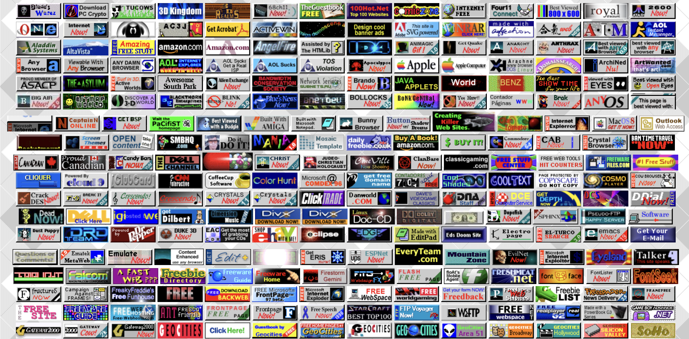

Before advanced search engines and social media platforms, people discovered websites in different ways. One of the most recognizable features of early internet design was the use of small rectangular buttons, mainly known as 88x31 buttons. These buttons were used as clickable links that connected different websites and helped create an easy pathway between personal webpages across the internet.

Early internet users relied on each other to share and discover websites. Instead of algorithms or recommendation systems, people linked to other sites they liked by adding their buttons to a “links” section. Website owners supported each other by promoting one another’s pages.
Here's a button I made using a 88 x 31 button maker tool!